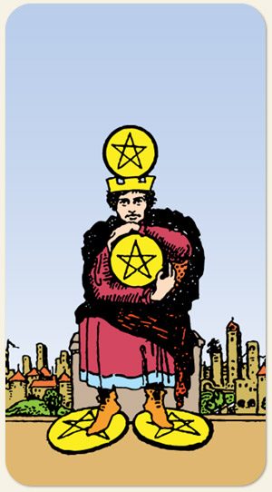

O Número Quatro fala da estabilidade e o Elemento Terra fala de segurança. É a rotina dos recursos, saber quanto entra, quanto sai, de onde entra e de onde sai. É o cofre de porquinho, é reter os recursos, é se manter na zona de segurança para não se expor ao risco de perder algo.
Cada um no seu quadrado, demarcação de terras, tudo redondinho (ou tudo quadradinho, bem aparado), a pessoa que precisa fazer o quadradinho de oito para se virar. Pessoa acumuladora, possessiva, controladora, paranoica, desconfiada, medo de perder. Quando não existe um ambiente com os recursos necessários.
Positivo: Estar com os boletos em dia, mesmo que não sobre para o supérfluo, dinheiro administrado corretamente, viver o lado bom da rotina, relacionamentos estáveis, viver com a segurança necessária.
Negativo: Avareza, viver na miséria mesmo tendo dinheiro guardado, o impulso de tentar controlar tudo, possessividade, não abrir mão de algo, não se abrir para o outro, não se abrir para o novo.
Símbolos: Homem, Coroa, Banco de Pedra, Cidade ao Fundo.
Cores: Amarelo, Vermelho, Azul, Cinza.
Referências: O Lobo de Wall Street (filme), Toc Toc (filme).